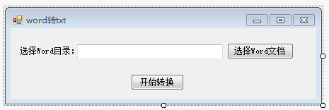
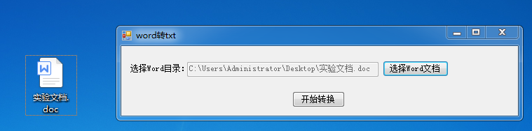
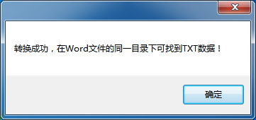
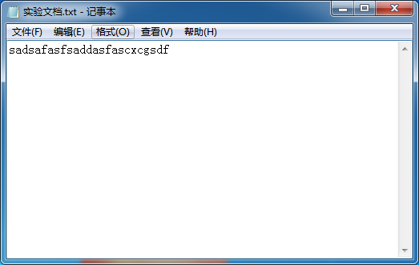

有想直接从Word转TXT文本的可以看看，懒得复制粘贴的也可以使用下，方便而快捷！！
首先打开vs2012创建一个简单的form窗体：

里面主要的就是一个存放Word文档的button和一个执行的button
点击运行后：把实验的Word文档导入文件中：

点击开始转换的button，进行执行文件:

点击确定实现整个过程，打开TXT文档：

核心代码部分：
namespace WordToText
{
public partial class Form1 : Form
{
public Form1()
{
InitializeComponent();
}
public static void WordToHtmlText(string WordFilePath)
{
try
{
Word.Application wApp = new Word.Application();
//指定原文件和目标文件
object docPath = WordFilePath;
string htmlPath = WordFilePath.Substring(0, WordFilePath.Length - 3) + "txt";
object Target = htmlPath;
//缺省参数
object Unknown = Type.Missing;
//只读方式打开
object readOnly = true;
//打开doc文件
Word.Document document = wApp.Documents.Open(ref docPath, ref Unknown,
ref readOnly, ref Unknown, ref Unknown,
ref Unknown, ref Unknown, ref Unknown,
ref Unknown, ref Unknown, ref Unknown,
ref Unknown);
object format = Word.WdSaveFormat.wdFormatText;
document.SaveAs(ref Target, ref format,
ref Unknown, ref Unknown, ref Unknown,
ref Unknown, ref Unknown, ref Unknown,
ref Unknown, ref Unknown, ref Unknown);
document.Close(ref Unknown, ref Unknown, ref Unknown);
wApp.Quit(ref Unknown, ref Unknown, ref Unknown);
}
catch (Exception e)
{
MessageBox.Show(e.Message);
}
}
private void button2_Click(object sender, EventArgs e)
{
if (textBox1.Text != "")
{
WordToHtmlText(textBox1.Text.Trim());
MessageBox.Show("转换成功，在Word文件的同一目录下可找到TXT数据！");
}
}
private void button1_Click(object sender, EventArgs e)
{
if (openFileDialog1.ShowDialog() == DialogResult.OK)
textBox1.Text = openFileDialog1.FileName;
}
}
}
有兴趣的可以自己动手试试！